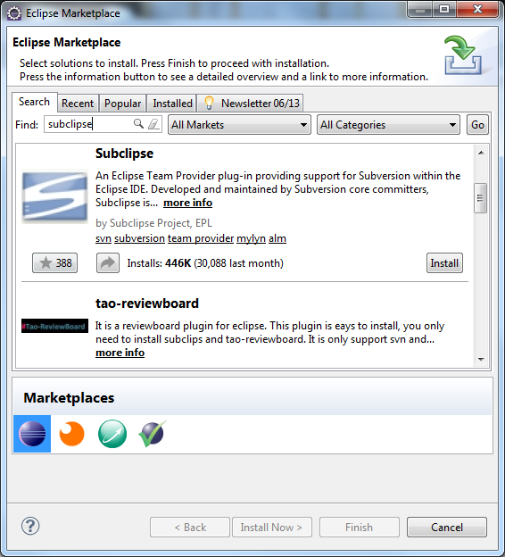
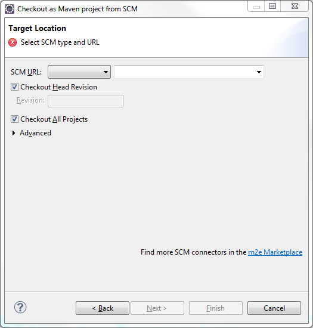
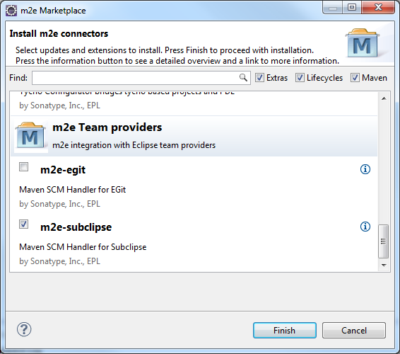
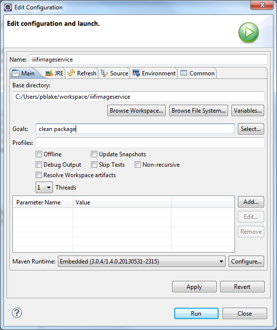

- Download and install the following software
Java SE 7 JDK - http://www.oracle.com/technetwork/java/javase/downloads/index.html
Eclipse IDE for Java EE Developers - http://www.eclipse.org/downloads/packages/eclipse-ide-java-ee-developers/keplerr
Tomcat 7 - http://tomcat.apache.org/download-70.cgi (zip version)
Run the Java installer and accept the defaults. Extract the Eclipse and Tomcat zips to your chosen locations.
-
There are three Sanddragon projects checked into Subversion. They are SanddragonImageService, SanddragonItemViewer and SanddragonWidget.
They can be found at -
https://v8b-vera.ad.bl.uk/svn/Architecture/IIIFLinuxPort/trunk/SanddragonImageService
https://v8b-vera.ad.bl.uk/svn/Architecture/IIIFLinuxPort/trunk/SanddragonItemViewer
https://v8b-vera.ad.bl.uk/svn/Architecture/IIIFLinuxPort/trunk/SanddragonWidget
- Once Java, Eclipse and Tomcat are installed the next step is to install the Subclipse Eclipse plugin. This links Eclipse and Subversion. Open Eclipse, select Help|Marketplace, enter subclipse in the search box and hit enter.

Click the Install button and then, in the following dialog, click Confirm, accept the terms of the licence and click Finish. OK any unsigned content warnings and restart Eclipse.
- Install the Maven Subclipse connector
- In Eclipse, select File|Import...|Maven|Checkout Maven Project from SCM|Next

- Click m2e Marketplace. Scroll down to m2e-subclipse, check it and click Finish.

- In the dialog that appears, click Next, Next, agree the licence terms and click Finish. OK any unsigned content warnings and restart Eclipse.
- Check-out the projects from Subversion into Eclipse
- Repeat step 1 i.e. select File|Import...|Maven|Checkout Maven Project from SCM|Next
- This time, select svn from the SCM URL: dropdown. Copy the SanddragonImageService url above into adjoining box.
- Click Next and, finally, Finish.
- The end result should be a fully compiled Maven-enabled project with no compile errors ready for development and building.
- Repeat for the other two projects
- Development and Building
- Once edits are completed (the main entry point is ImageController.java) build a new war file by right-clicking on the project name and selecting Run As...|Maven Build...
- In the dialog that appears enter 'clean package' in the Goals: field.

- Click Run. Some unit tests will run and assuming there are no failures or build problems there will be a new war file called SanddragonImageService.war. It can be found in the target directory off the Eclipse project directory. For subsequent builds just select Maven build
- Deployment
- Drop the war file into the webapps directory of Tomcat.
- Start Tomcat by running bin\startup.bat
- The service will be available at http://localhost:8080/SanddragonImageService/ (the url will need to be completed with image name and other parameters).
- Tomcat can also be installed using an .exe and run as a service. This only affects how it is started and stopped.
- Other issues - Maven may need additional configuration to get through the proxy to the Internet. Drop this settings file into %USERPROFILE%\.m2 directory. Enter your own credentials first.